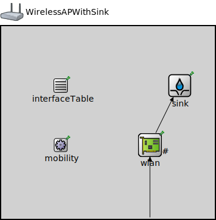

Package: inet.examples.wireless.throughput
WirelessAPWithSink
compound moduleWell, this models a 802.11 Access Point with a Sink.
Usage diagram
The following diagram shows usage relationships between types. Unresolved types are missing from the diagram.
Used in
| Name | Type | Description |
|---|---|---|
| Throughput | network | (no description) |
Properties
| Name | Value | Description |
|---|---|---|
| networkNode | ||
| labels | node | |
| display | i=device/accesspoint |
Gates
| Name | Direction | Size | Description |
|---|---|---|---|
| radioIn | input |
Unassigned submodule parameters
| Name | Type | Default value | Description |
|---|---|---|---|
| interfaceTable.displayAddresses | bool | false |
whether to display IP addresses on links |
| sink.displayStringTextFormat | string | "received %p pk (%l)" |
determines the text that is written on top of the submodule |
| sink.clockModule | string | "" |
relative path of a module that implements IClock(1,2); optional |
| sink.initialConsumptionOffset | double | 0s |
initial duration before which packets are not consumed |
| sink.consumptionInterval | double | 0s |
elapsed time between subsequent packets allowed to be pushed by the connected packet producer, 0 means any number of packets can be pushed at the same simulation time |
| sink.scheduleForAbsoluteTime | bool | true |
when a clock is used relative means that setting the clock will not affect the simulation time of the event |
| wlan.pcapRecorder.verbose | bool | true |
whether to log packets on the module output |
| wlan.pcapRecorder.pcapFile | string | "" |
the PCAP file to be written |
| wlan.pcapRecorder.fileFormat | string | "pcapng" | |
| wlan.pcapRecorder.snaplen | int | 65535 |
maximum number of bytes to record per packet |
| wlan.pcapRecorder.dumpBadFrames | bool | true |
enable dump of frames with hasBitError |
| wlan.pcapRecorder.sendingSignalNames | string | "packetSentToLower" |
space-separated list of outbound packet signals to subscribe to |
| wlan.pcapRecorder.receivingSignalNames | string | "packetReceivedFromLower" |
space-separated list of inbound packet signals to subscribe to |
| wlan.pcapRecorder.dumpProtocols | string | "ethernetmac ppp ieee80211mac" |
space-separated list of protocol names as defined in the Protocol class |
| wlan.pcapRecorder.packetFilter | object | "*" |
which packets are considered, matches all packets by default |
| wlan.pcapRecorder.helpers | string | "" |
usable PcapRecorder::IHelper helpers for accept packettype and store/convert packet as specified linktype currently available: "inet::AckingMacToEthernetPcapRecorderHelper" |
| wlan.pcapRecorder.alwaysFlush | bool | false |
flush the pcapFile after each write to ensure that all packets are captured in case of a crash |
| wlan.pcapRecorder.displayStringTextFormat | string | "rec: %n pks" | |
| wlan.mgmt.macModule | string |
The path to the MAC module |
|
| mobility.subjectModule | string | "^" |
module path which determines the subject module, the motion of which this mobility model describes, the default value is the parent module |
| mobility.coordinateSystemModule | string | "" |
module path of the geographic coordinate system module |
| mobility.displayStringTextFormat | string | "p: %p\nv: %v" |
format string for the mobility module's display string text |
| mobility.updateDisplayString | bool | true |
enables continuous update of the subject module's position via modifying its display string |
| mobility.constraintAreaMinX | double | -inf m |
min x position of the constraint area, unconstrained by default (negative infinity) |
| mobility.constraintAreaMinY | double | -inf m |
min y position of the constraint area, unconstrained by default (negative infinity) |
| mobility.constraintAreaMinZ | double | -inf m |
min z position of the constraint area, unconstrained by default (negative infinity) |
| mobility.constraintAreaMaxX | double | inf m |
max x position of the constraint area, unconstrained by default (positive infinity) |
| mobility.constraintAreaMaxY | double | inf m |
max y position of the constraint area, unconstrained by default (positive infinity) |
| mobility.constraintAreaMaxZ | double | inf m |
max z position of the constraint area, unconstrained by default (positive infinity) |
| mobility.initialX | double | uniform(this.constraintAreaMinX, this.constraintAreaMaxX) | |
| mobility.initialY | double | uniform(this.constraintAreaMinY, this.constraintAreaMaxY) | |
| mobility.initialZ | double | nanToZero(uniform(this.constraintAreaMinZ, this.constraintAreaMaxZ)) | |
| mobility.initialLatitude | double | nan deg | |
| mobility.initialLongitude | double | nan deg | |
| mobility.initialAltitude | double | 0m | |
| mobility.initialHeading | double | 0deg | |
| mobility.initialElevation | double | 0deg | |
| mobility.initialBank | double | 0deg | |
| mobility.initFromDisplayString | bool | true |
enables one time initialization from the subject module's display string |
| mobility.updateFromDisplayString | bool | true |
enables continuous update from the subject module's display string for dragging and rotating it |
Source code
// // Well, this models a 802.11 Access Point with a Sink. // module WirelessAPWithSink { parameters: @networkNode(); @labels(node); @display("i=device/accesspoint"); *.interfaceTableModule = "^.interfaceTable"; wlan.radio.antenna.mobilityModule = default("^.^.^.mobility"); gates: input radioIn @directIn; submodules: interfaceTable: InterfaceTable { parameters: @display("p=100,100;is=s"); } sink: PassivePacketSink { parameters: @display("p=300,100"); } wlan: Ieee80211Interface { parameters: @display("p=250,200;q=queue"); llc.typename = "Ieee80211Portal"; mgmt.typename = "Ieee80211MgmtApSimplified"; agent.typename = ""; } mobility: StationaryMobility { parameters: @display("p=100,200;is=s"); } connections allowunconnected: radioIn --> { @display("m=s"); } --> wlan.radioIn; wlan.upperLayerOut --> sink.in; }File: examples/wireless/throughput/WirelessAPWithSink.ned
 This documentation is released under the Creative Commons license
This documentation is released under the Creative Commons license